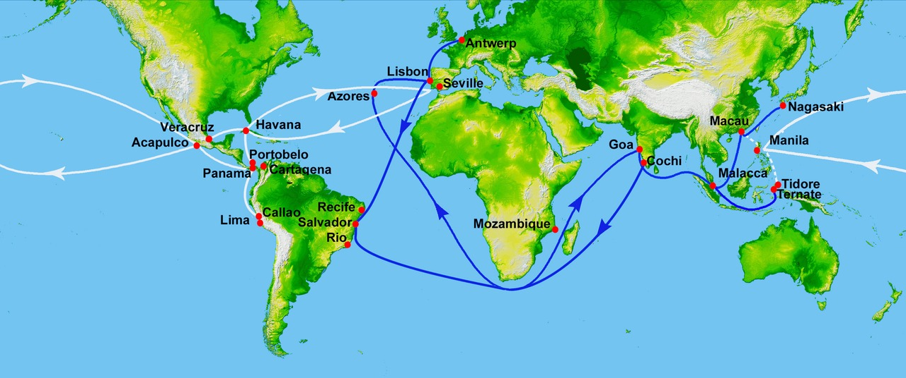

4.2 Exploration: Causes and Events from 1450 to 1750
- LO-A: Why states sponsored exploration — The AP exam's emphasizes that transoceanic exploration was state-supported, not the product of independent adventurers. Monarchs funded voyages because they wanted commercial advantages (direct access to Asian spice markets, bypassing Ottoman/Arab middlemen), religious motivations (spreading Christianity, outflanking Muslim states), and competitive pressure (if rival states found sea routes to Asia, you were commercially ruined). The Portuguese royal family sponsored exploration for nearly a century before Vasco da Gama reached India in 1498. Portugal — the first mover —: Portugal systematically explored the African coast from the 1420s onward under royal sponsorship. Key milestones: Bartolomeu Dias rounded the Cape of Good Hope (1488); Vasco da Gama reached Calicut, India (1498). Portugal built a network of fortified trading posts (called feitorias) around the Indian Ocean, creating the first European maritime empire. Effect: Portuguese spice prices undercut Venice by 80%, destroying the Mediterranean spice trade.
- LO-B: Explain the economic causes and effects of maritime… — Spain — the Atlantic gamble —: Columbus's 1492 voyage, sponsored by Ferdinand and Isabella, was an attempt to reach Asia by sailing west. He reached the Caribbean instead. The Treaty of Tordesillas (1494) divided the non-European world between Portugal and Spain. Magellan-Elcano's circumnavigation (1519–1522) proved the Earth was round and the Pacific was crossable — and that Asia could be reached from the west. England, France, and the Dutch —: Northern European states initially focused on finding alternative routes to Asia (Northwest Passage, Northeast Passage) to avoid Portuguese- and Spanish-dominated southern routes. England sponsored John Cabot (1497) and Francis Drake's circumnavigation (1577–1580). France sponsored Jacques Cartier's exploration of Canada (1534). The Dutch entered the race late (1590s) but used superior commercial organization to dominate global trade by the 1620s. The underlying goal in all cases: accessing Asian markets more cheaply than overland routes allowed.
Try each question before revealing the answer.
1. The Ottoman conquest of Constantinople in 1453 is often cited as a cause of European exploration. Is this actually accurate? What economic reality better explains European motivation?
2. Why did European monarchs, rather than private merchants, fund the first transoceanic voyages? What advantage did state sponsorship provide?
3. Columbus was seeking a western route to Asia and failed — he found the Americas instead. How did Spain convert this "failure" into an advantage over Portugal?
4. Why did northern European countries (England, France, the Dutch) enter oceanic exploration later than Portugal and Spain, and what alternative routes did they seek?
5. The Treaty of Tordesillas (1494) divided the non-European world between Spain and Portugal. Why did this document matter — and why did it ultimately fail to achieve its purpose?
- Describe the role of states in the expansion of maritime exploration from 1450 to 1750
- Explain the economic causes and effects of maritime exploration by the various European states
Tap a term for its definition.
-
Definition: Portuguese prince (1394–1460) who sponsored and organized systematic Portuguese exploration of the African coast, establishing a navigation school and funding successive expeditions. Significance: Represents state sponsorship of exploration — exploration as a royal policy, not individual adventure. His program laid the foundation for Vasco da Gama's voyage to India forty years later.
-
Definition: Portuguese explorer who made the first European sea voyage to India by sailing around Africa (1497–1499). Significance: Established the Portuguese sea route to Asia, initiating the age of direct European trade with India and transforming the global spice trade.
-
Definition: Italian navigator sailing under Spanish sponsorship who reached the Caribbean in 1492 while seeking a western sea route to Asia. Significance: His voyage initiated permanent European contact with the Americas, beginning the processes of colonization, the Columbian Exchange, and Atlantic trade that would reshape the world.
-
Definition: A papal-brokered treaty between Spain and Portugal dividing the non-European world between them along a line 370 leagues west of the Cape Verde Islands. Significance: Formalized early European claims to newly contacted territories; explains why Brazil speaks Portuguese; failed to bind non-signatories (England, France, the Dutch).
-
Definition: Sailing completely around the Earth. Significance: The Magellan-Elcano expedition (1519–1522) completed the first circumnavigation, proving the Earth's shape and vastness, demonstrating that Asia could be reached from the west, and establishing the enormous scale of the Pacific Ocean.
-
Definition: An empire built around fortified trading posts (not territorial control of large land areas), used to dominate sea-based commerce. Significance: Portugal's model for controlling Asian and African trade; built forts at key ports (Goa, Malacca, Hormuz) to control sea lanes without colonizing large territories. Contrasts with Spain's territorial empire in the Americas.
-
Definition: A hypothetical sea route through the Arctic Ocean above North America to Asia, sought by English and French explorers as an alternative to southern routes. Significance: Motivated much of English and French exploration of North American coastlines; largely unnavigable due to ice until the 20th century.
-
Definition: Portuguese fortified trading post, typically built at key harbor locations around the Indian Ocean and West African coast. Significance: The building blocks of Portugal's trading post empire; allowed Portugal to control access to sea lanes and tax regional trade without governing large land territories.
💰 The Causes: Why States Decided to Explore
In 1400, European merchants had a problem. The luxury goods they most wanted — Indian pepper and cinnamon, Indonesian cloves and nutmeg, Chinese silk and porcelain — arrived in Europe through a chain of middlemen. Arab traders carried spices from India across the Indian Ocean to the Persian Gulf or Red Sea. Overland caravans carried them to Ottoman-controlled ports in the eastern Mediterranean. Venetian merchants then sold them across Europe at enormous markups. By the time a sack of pepper reached Lisbon, it had changed hands five or six times, each merchant taking a cut. Prices were five to eight times what the same spices cost at their source.
The commercial logic of finding a direct sea route to Asia was irresistible: whoever could trade with Asia directly — without any of those middlemen — would make fortunes while selling goods more cheaply than any competitor. This was not the motivation of individual adventurers. It was the strategic calculation of states.
The AP exam's emphasizes that transoceanic exploration was state-supported. European monarchs funded voyages for a combination of economic ambition (commercial advantage), religious motivation (spreading Christianity), and competitive pressure (if a rival state found a direct route to Asia, your kingdom was commercially ruined). The first state to act systematically was Portugal.

Image credit not specified.
Major European exploration routes, 1450–1600: Portuguese routes around Africa to Asia (blue); Spanish routes across the Atlantic and Pacific (red); English and French routes across the North Atlantic (green). AI-generated illustration (Google Gemini, 2025), commercially licensed.
🇵🇹 Portugal: The Systematic Pioneer
Portugal's program of ocean exploration was the most methodical, sustained, and ultimately successful state-directed exploration effort in history. It lasted roughly eighty years (c. 1415–1498) and was organized from the beginning as a royal program rather than a series of individual ventures.
The effort began under Prince Henry the Navigator (1394–1460), who funded expeditions, recruited navigators, collected geographic information, and systematically extended Portuguese knowledge of the African coast. He wasn't interested in Africa for its own sake — he wanted to find how far south the continent went and whether there was a route around it to the Indian Ocean.
Progress was slow. Portuguese explorers added a few hundred miles of African coastline to their maps each decade. Key milestones:
- 1441: Portuguese ships reach the area of modern Mauritania; first enslaved Africans brought to Portugal — the beginning of the Atlantic slave trade.
- 1460s–1480s: Exploration of the Gulf of Guinea, the Congo River mouth, and the equatorial African coast.
- 1488: Bartolomeu Dias rounds the Cape of Good Hope — proving that Africa had a southern tip and that the Indian Ocean was accessible from the Atlantic.
- 1498: Vasco da Gama sails from Lisbon around Africa to Calicut, India — arriving with a cargo of pepper that sold in Lisbon for sixty times what it cost in Calicut. Portugal had found the route.
Portugal's response to reaching India was to build a trading post empire — a network of fortified ports (feitorias) at key locations around the Indian Ocean. Portugal seized control of Goa (on India's west coast, 1510), Malacca (controlling the strait between the Indian Ocean and the South China Sea, 1511), and Hormuz (controlling the Persian Gulf entrance, 1515). These fortresses allowed Portugal to tax and control the sea lanes connecting Asia, Africa, and eventually Europe — without governing large land territories.
🇪🇸 Spain: The Atlantic Gamble
Spain's path to maritime empire was an accident. In 1492, Christopher Columbus — a Genoese navigator rejected by the Portuguese — successfully pitched King Ferdinand and Queen Isabella of Spain on a different approach: reach Asia by sailing west across the Atlantic, which he believed (incorrectly) was a much shorter route than going around Africa.
Columbus was wrong about the geography in the most consequential way possible. The Atlantic is far wider than he calculated, and an entire continent — the Americas — stood between Europe and Asia. On October 12, 1492, Columbus's fleet reached the Bahamas, which he believed was an outlying island of Asia. He was wrong, but the consequences of his error were civilization-altering.
Spain quickly realized that the Americas were not Asia but were themselves enormously valuable. The Treaty of Tordesillas (1494), brokered by Pope Alexander VI, divided the non-European world between Spain and Portugal — Spain got everything west of a line in the Atlantic (essentially the Americas), Portugal got everything east (Africa and Asia). Spain then launched a series of conquest expeditions (conquistadors) into the Americas, and by 1521 Hernán Cortés had conquered the Aztec Empire, and by 1533 Francisco Pizarro had conquered the Inca Empire, giving Spain access to the richest silver deposits in the world.
The Magellan-Elcano circumnavigation (1519–1522) completed the picture. Ferdinand Magellan (Portuguese, sailing for Spain) sought to reach Asia from the west by sailing around the tip of South America. He found the Pacific Ocean — which was enormously larger than anyone had imagined. Magellan died in the Philippines; Juan Sebastián Elcano brought one surviving ship (out of five that started) back to Spain with a cargo of spices. The circumnavigation proved the Earth was round, that Asia could be reached from the west, and that the Pacific was crossable — just barely, and at terrible cost.
🇬🇧🇫🇷🇳🇱 England, France, and the Dutch
Northern European powers entered the exploration race later and with different immediate goals. Portugal and Spain had already claimed the southern routes (around Africa and across the Atlantic), so England and France initially focused on finding northern alternatives:
The Dutch approach was particularly significant. Rather than seeking new routes, the Dutch competed directly on existing ones — sailing around Africa to Asia exactly as Portugal had, but doing it more cheaply with their fluyt ships and joint-stock company organization. By the 1620s, the Dutch had displaced Portugal as the dominant power in the Indian Ocean spice trade.
📊 Effects: What Exploration Actually Produced
The College Board's second LO for 4.2 asks about the economic causes and effects of maritime exploration. Here are the major effects:
- Portugal's effect on Mediterranean trade: Portuguese sea routes undercut Venetian spice prices, beginning the decline of Italian city-states as centers of global trade. Venice never fully recovered.
- New colonial empires: Spain's conquest of the Americas created the first large territorial colonial empire in the Western Hemisphere; Portugal built a trading post empire around the Indian Ocean. Both established patterns of European imperialism that persisted for centuries.
- The Columbian Exchange: Permanent contact between the Eastern and Western Hemispheres initiated the greatest biological exchange in human history — covered in Topic 4.3.
- New labor systems: European colonies required labor. In the Americas, this produced new coercive labor systems — encomienda, mita, and eventually chattel slavery — that reshaped populations across three continents — covered in Topic 4.4.
- Silver and global trade: Spanish mining of Potosí silver (Bolivia) produced so much silver that it became the world's primary currency, linking American mines to Asian markets — covered in Topic 4.5.
Nothing added yet. To attach a Google NotebookLM audio overview, video overview, or infographic to this topic: open this file — build/data/content/ap-world-history/4-2.json — and add an entry to notebookLmResources with a title and a shareable link (or paste an embed <iframe> directly into this block in the generated HTML file if you're editing the page by hand instead).
- A) Individual explorers competing independently for Portuguese royal rewards
- B) The Portuguese monarchy's desire to prevent other European states from using Atlantic trade winds
- C) State-sponsored, systematic accumulation of navigational knowledge as a strategic investment
- D) The use of exploration primarily as a means of spreading Christianity to West African populations
- A) The reliability of Renaissance-era astronomical charts for transatlantic navigation
- B) How consequential historical developments can result from unintended outcomes of actions planned for other purposes
- C) The superior geographical knowledge of Portuguese navigators compared to Spanish-sponsored explorers
- D) The deliberate deception of Spanish monarchs by Columbus to secure funding for an Americas voyage
- A) The inability of two states to enforce a bilateral agreement against competing European powers who had not consented to its terms
- B) Portugal and Spain voluntarily sharing their colonial territories with northern European allies
- C) The discovery by English and French explorers that Portugal and Spain had inaccurately described their territorial claims
- D) A formal revision of the Treaty of Tordesillas negotiated at the Council of Trent
- A) A territorial empire similar to Spanish colonization of the Americas
- B) A missionary empire designed primarily to spread Christianity throughout the Indian Ocean world
- C) An alliance system between Portugal and existing Asian states to share trade profits
- D) A trading post empire built around controlling sea lanes rather than governing large populations
- A) Military conquest as the primary mechanism of Dutch commercial expansion into Asian markets
- B) Commercial and organizational innovation as a more durable basis for economic power than early arrival and military advantage
- C) The failure of state-sponsored exploration as a model for commercial development
- D) The superiority of Protestant commercial ethics over Catholic Portuguese practices
Answer all three parts.
Part A
Explain ONE economic cause of European maritime exploration in the period 1450–1750.
Part B
Describe the role of states in supporting maritime exploration in the period 1450–1750, using ONE specific example.
Part C
Explain ONE effect of maritime exploration on global trade networks in the period 1450–1750.
Write a thesis before revealing. Consider whether religious, competitive, or other motivations complicate the economic argument.
📝 My Notes (edit this yourself — no AI needed)
This box is yours. Open this page's HTML file directly (in GitHub's editor or any text editor), find the <!-- MY-NOTES-START --> comment below, and type between the markers — corrections, extra context for this year's students, a link, anything. Changes show up as soon as you save and re-publish the file — nothing else on the page will change.
(Add your own notes, corrections, or extra context here.)